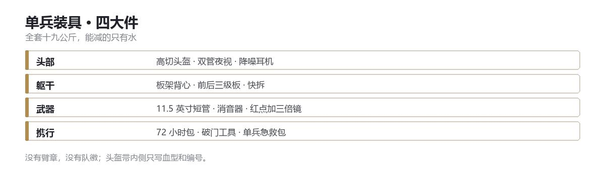

DOC 07 · 安全部门制式装备
安全部门制式装备
特战级单兵装具 · 没有队徽，只有血型和编号

安全部门的装具按特战标准配发：轻、模块化、坏了能在军械库五分钟换掉。
括号里是采购型号，仅供军械库对货，不代表 GACC 的采购渠道。
全套约十九公斤。能减的只有一样——把水喝掉。
一、配装原则
- 一切可替换 任何一件装具坏了，军械库五分钟内换一套。换不了的不配发。
- 深灰，不是迷彩 总部是室内环境。灰黑色在走廊、楼梯间和电梯里，比任何迷彩都安静。
- 手能修 电子件越少越好；能用螺丝刀修的，不用送修。
二、头部系统
高切头盔 约 0.7 公斤，两侧 ARC 导轨，前置夜视座，魔术贴面。不装护耳——护耳会挡住耳机，也会挡住身后的人叫你。（Ops-Core FAST SF）
夜视 当值队配双管，备勤队配单管，四眼要总署批准后才能领，一年领不了几次。（L3Harris AN/PVS-31A ／ GPNVG-18）
拾音降噪耳机 双通道，能同时听无线电和环境声。（Ops-Core AMP，或 Peltor ComTac VI）戴耳机不是为了让世界安静，是为了在枪声里还能听见脚步。
头盔灯 红白双色，白光 200 流明，红灯常亮。（Princeton Tec Charge）
面罩 可拆的下颌防护，只在破门和近战时挂上。
三、躯干与防护
板架式背心 空重 1.1 公斤，前后各一块三级独立板，能挡 7.62×51 普通弹；侧板 3A，只防破片和手枪弹。（Crye Precision JPC 2.0；主板 Hesco 3810）
快拆 一根拉环，伤员三十秒内能从背心里剥出来。这条是给活人用的，不是给尸体用的。
拖拽把手 后颈处一个，硬质。拖人的时候，抓这里，不抓肩带。
腰封 独立于背心，挂弹匣、工具和手枪。背心中弹时，腰封还在。（Ronin Tactics Senshi，配 Safariland 6354DO 枪套）
挂载 弹匣 6+1，水袋 1.5 升，止血带左右各一，手套挂环，荧光棒两根。
四、武器系统
主武器 5.56×45 短管卡宾，11 英寸枪管，配消音器。红点加三倍翻转镜，IR 激光与照明模块，600 流明枪灯。（HK416A5 11"，SureFire SOCOM556-RC2 消音器，Aimpoint T-2，EOTech G33，AN/PEQ-15，SureFire M640）
副武器 9mm 手枪，红点，消音器，20 发弹匣。（Glock 17 Gen5 MOS，Aimpoint ACRO P-2）拔枪速度比威力重要——在走廊里，先拔出来的人赢。
破门枪 12 号泵动，配破门弹。只在撞门时用，不装瞄准镜。（Remington 870 MCS）
精确射手步枪 7.62×51 半自动，配 1–8 倍镜。每个班组一支，不每人一支。（Knight's Armament SR-25，Nightforce NX8 1-8×）
非致命 豆袋弹、催泪弹、电击器。非致命的意思是"不马上死"，不是"不会死"。
五、破门与工具
- 撞门锤 8 公斤，双人操作。
- 液压剪 切断铰链和锁舌，三十秒内开口。（Holmatro 便携型）
- 撬棍 1.2 米，最原始也最不会坏。
- 窥镜 门下缝隙探入，五米软管。（Bosch GIC 5-27 工业内窥镜）
- 门楔 进门第一件事是封住身后的门。
- 荧光绳 一卷五十米，钉在门框上，一路放。GPS 会撒谎，绳子不会。
六、通讯、导航与态势
电台 多频段手持，配耳机与喉震麦克风，建筑物内自动切到短距模式。（L3Harris AN/PRC-152A，配 Invisio V60 控键）
终端 七英寸加固平板，装战术地图与蓝队跟踪，外壳防水防摔。（Samsung Tab Active3 加 Juggernaut 装甲壳，跑 ATAK）只在指挥员手里，不给每个人发——看得见所有人的人，只需要一个。
无人机 掌心大小，用于进楼前的室内侦察，续航二十五分钟，五十米外听不见。（Teledyne FLIR Black Hornet 3）
七、医疗与生存
单兵急救包 止血带两条、止血粉、胸腔密封贴、鼻咽管、保温毯、记号笔。（CAT 止血带、QuikClot Combat Gauze、Hyfin Vent 胸腔贴）
规则：先止血，再还击。这条写在急救包盖子的内侧。
饮水 1.5 升水袋加两片净水片。总部断水的情况下，这是七十二小时的量。
八、特殊环境
CBRN 套装 全封闭面具加防化服，配独立供气，穿戴一次四分钟。只在 4 级区域和生物污染现场使用。（Avon M50 面具）
防割手套 凯夫拉内衬，指尖可触屏。不戴手套的人，手会先出问题。（Mechanix M-Pact）
护膝护肘 硬壳，快拆。跪姿是这套装备里用得最多的姿势。（Crye AirFlex）
靴子 中帮，防水，湿地抓地。总部楼梯一天上下几十趟，鞋比枪先坏。（Salomon Quest 4D GTX）
九、值班与封存
- 值班装备 随人走。当值队二十四小时穿戴，武器上膛，弹药基数满；下班交回，签字。
- 封存装备 在总部地下军械库，双人双锁。取用需当值队长与安全主管同时签字。
- 破城者的重装备 不参与轮换，固定在军械库最下层，只有领队与总署能开。
- 核安保岗的钥匙 不在军械库，在安全主管的脖子上。
装备只解决第一分钟。第一分钟之后，靠的是值班表上写着谁的名字。